N_Friends | Depression |
|---|---|
8 | 2 |
1 | 9 |
5 | 4 |
10 | 3 |
5 | 5 |
8 | 4 |
6 | 3 |
5 | 5 |
6 | 4 |
10 | 1 |
7 Models of relationships between data
7.1 Introduction
Statistics is fundamentally about making sense of data. At its core, modern statistics blends art and science to help us extract meaningful patterns, uncover relationships, and generate useful predictions. One of the primary ways we do this is through models—simplified representations of complex real-world processes.
Whenever we analyse data to answer a question, solve a problem, or understand a system, we are implicitly or explicitly building a model. And although statistical models may sound technical, the idea of modelling is something we all practice constantly. Every time we interpret information, anticipate what might happen next, or make a decision based on past experience, we are relying on informal mental models of the world.
To illustrate, imagine a team of designers developing a new smartphone. They would never jump straight into manufacturing without planning. Instead, they study existing phones, gather data on battery performance, screen durability, camera quality, and user behaviour, and then construct a prototype. The prototype is not a perfect replica of the final product, but a simplified version that captures the essential features. It can then be tested—perhaps by running stress tests or user trials—to predict how the final device will perform in real-world conditions.

In statistics, this same idea appears in the concept of model fit: how well a model represents the patterns in the data.
A well-fitting model behaves much like the real system, producing reliable predictions. A moderately fitting model captures some aspects of reality but misses others, leading to weaker predictions. A poorly fitting model bears little resemblance to the real world and provides unreliable or misleading results.
This concept is just as important in business and economics. Consider a company using historical sales data (2017–2020) to forecast sales for 2021. A model that simply predicts the average of past sales ignores trends and seasonality (Model 1) — clearly a poor fit. A trending-only model (Model 2) improves slightly but still misses seasonal peaks. A model that incorporates both trend and seasonal patterns fits the data more closely and produces more credible forecasts.

These examples emphasise a key insight: a model is only as useful as its ability to reflect the underlying data-generating process.
In the chapters ahead, we will gradually work our way toward the most fundamental and widely used statistical modelling tool: linear regression. Before we get there, we first need a solid understanding of how to model relationships between variables, how to assess model fit, and how to use models responsibly to answer questions about the world.
7.2 Covariance and Correlation
So far we’ve talked about how to summarise a single variable. In practice, though, we are usually interested in how two variables move together. Do people who spend more time on TikTok also spend more money online? Do higher advertising budgets go hand-in-hand with higher sales? To answer questions like these we need tools that describe relationships between variables, not just each variable on its own. :contentReferenceoaicite:0
7.2.1 A motivating example
Imagine a participant, Charles, who is taking part in a marketing study. At the start of each week, researchers assign him a certain number of hours of marketing videos to watch. Over the same week they record:
- how much money he spends on online shopping; and
- how many minutes of exercise he does.
Across several weeks a pattern emerges:

- In weeks with more marketing, Charles tends to spend more online.
- In those same weeks, he tends to exercise less.
If we plot “time spent watching marketing videos” against “amount spent online”, the points slope upwards: large values of one tend to go with large values of the other. If we instead plot “time spent watching marketing videos” against “exercise minutes”, the points slope downwards: large values of one tend to go with small values of the other.
What we are noticing informally is that some pairs of variables rise and fall together, while others move in opposite directions. We now want a numerical measure that captures this idea.
7.2.2 What is covariance?
Covariance is a measure of how two variables vary jointly around their means. For two variables \(X\) and \(Y\) measured on the same \(n\) individuals, the sample covariance is
\[ \operatorname{Cov}(X,Y) = \frac{1}{n-1} \sum_{i=1}^{n} \bigl(x_i - \bar{x}\bigr)\bigl(y_i - \bar{y}\bigr). \]
The logic mirrors the variance:
- For variance, we take deviations from the mean \((x_i - \bar{x})\), square them, and average to see how a single variable spreads around its mean.
- For covariance, we multiply paired deviations
\((x_i - \bar{x})(y_i - \bar{y})\) and average them to see whether the two variables wander away from their means in the same direction or in opposite directions.
This leads to three broad possibilities:
- Positive covariance: when \(x_i\) is above \(\bar{x}\), \(y_i\) also tends to be above \(\bar{y}\); when one is below its mean, the other tends to be below as well. The product of deviations is mostly positive, so the average is positive. In Charles’ case, “time watching marketing videos” and “online spending” have positive covariance.
- Negative covariance: when \(x_i\) is above \(\bar{x}\), \(y_i\) tends to be below \(\bar{y}\), and vice versa. Products of deviations are mostly negative, giving a negative covariance. This describes the relationship between Charles’ “time watching marketing videos” and his “exercise minutes”.
- Covariance near zero: there is no consistent pattern; sometimes the deviations have the same sign, sometimes opposite, and they cancel out on average. In that case the variables are said to have (approximately) no linear relationship.
NoteA worked example - Positive Covariance
In the example below, each pair is moving in the same direction relative to their means, i.e. negative-negative, positive-positive. When this is applied to the formula, we obtain a positive covariance.

NoteA worked example - Negative Covariance
In this example, most of the pairs are moving in opposite directions, e.g. negative-positive, positive-negative. When this is applied to the formula, we receive a negative covariance.

A useful way to think about covariance is:
Are high values of \(X\) paired with high values of \(Y\) (positive), low values of \(Y\) (negative), or a bit of both (around zero)?
7.2.3 Why raw covariance is hard to interpret
Covariance is excellent for telling us the direction of a relationship, but much less helpful for telling us the strength of that relationship.
The problem is that covariance depends on the units of measurement:
- If online spending is measured in dollars, the covariance might be \(42.5\).
- If we re-express the same spending in cents, every spending value is multiplied by 100, and the covariance is multiplied by 100 as well (e.g. \(4250\)).
The underlying relationship between time and spending has not changed at all, but the numerical value of the covariance has. There is no natural upper or lower bound, and so it is difficult to look at a covariance of, say, \(150\) and know whether that is “large” or “small”. We need a standardised version.
7.2.4 From covariance to correlation
To obtain a measure that is independent of units, we standardise the covariance by dividing by the standard deviations of each variable:
\[ r_{XY} = \frac{\operatorname{Cov}(X,Y)}{s_X s_Y}, \]
where \(s_X\) and \(s_Y\) are the sample standard deviations of \(X\) and \(Y\). This standardised measure is the correlation coefficient.
Some key properties of the correlation coefficient:
- It always lies between \(-1\) and \(+1\).
- The sign (positive or negative) tells us the direction of the relationship, just like covariance.
- The magnitude tells us the strength of the linear relationship:
- values near \(\pm 1\): very strong linear relationships;
- values near 0: weak or no linear relationship.
- Because it is unit-free, a correlation of \(0.8\) means the same “strength” whether we measure income in dollars or euros, or height in centimetres or inches.
Visually, if we plot \(X\) and \(Y\) in a scatterplot:
- correlations close to \(+1\) produce points that hug an upward-sloping straight line;
- correlations close to \(-1\) hug a downward-sloping line;
- correlations near 0 produce a diffuse cloud with no obvious linear pattern.

NoteA worked example - Correlation
To illustrate how correlation is computed, consider the following 10 paired observations for variables \(X\) and \(Y\):
| \(i\) | \(x_i\) | \(y_i\) |
|---|---|---|
| 1 | 12 | 10 |
| 2 | 15 | 14 |
| 3 | 9 | 11 |
| 4 | 18 | 16 |
| 5 | 11 | 9 |
| 6 | 20 | 19 |
| 7 | 14 | 13 |
| 8 | 7 | 8 |
| 9 | 16 | 15 |
| 10 | 10 | 9 |
Step 1 — Compute the means
\[ \bar{x} = \frac{1}{10}\sum_{i=1}^{10} x_i = \frac{12+15+9+18+11+20+14+7+16+10}{10} = 13.2 \]
\[ \bar{y} = \frac{1}{10}\sum_{i=1}^{10} y_i = \frac{10+14+11+16+9+19+13+8+15+9}{10} = 12.4 \]
Step 2 — Compute deviations from the mean
For each pair:
\[ dx_i = x_i - \bar{x}, \qquad dy_i = y_i - \bar{y} \]
We also compute the product \(dx_i \cdot dy_i\):
| \(i\) | \(dx_i\) | \(dy_i\) | \(dx_i dy_i\) |
|---|---|---|---|
| 1 | \(-1.2\) | \(-2.4\) | \(2.88\) |
| 2 | \(1.8\) | \(1.6\) | \(2.88\) |
| 3 | \(-4.2\) | \(-1.4\) | \(5.88\) |
| 4 | \(4.8\) | \(3.6\) | \(17.28\) |
| 5 | \(-2.2\) | \(-3.4\) | \(7.48\) |
| 6 | \(6.8\) | \(6.6\) | \(44.88\) |
| 7 | \(0.8\) | \(0.6\) | \(0.48\) |
| 8 | \(-6.2\) | \(-4.4\) | \(27.28\) |
| 9 | \(2.8\) | \(2.6\) | \(7.28\) |
| 10 | \(-3.2\) | \(-3.4\) | \(10.88\) |
Sum of products:
\[ \sum dx_i dy_i = 127.08 \]
Step 3 — Compute the sum of squared deviations
For \(X\):
\[ \sum dx_i^2 = (-1.2)^2 + (1.8)^2 + \cdots + (-3.2)^2 = 149.6 \]
For \(Y\):
\[ \sum dy_i^2 = (-2.4)^2 + (1.6)^2 + \cdots + (-3.4)^2 = 112.4 \]
Step 4 — Compute the correlation
Correlation is defined as:
\[ r = \frac{\sum (x_i - \bar{x})(y_i - \bar{y}) } {\sqrt{\sum (x_i - \bar{x})^2 } \; \sqrt{\sum (y_i - \bar{y})^2 }} \]
Substituting:
\[ r = \frac{127.08}{\sqrt{149.6} \, \sqrt{112.4}} \]
Compute denominators:
\[ \sqrt{149.6} = 12.228, \qquad \sqrt{112.4} = 10.602 \]
Thus:
\[ r = \frac{127.08}{12.228 \times 10.602} \]
\[ r = \frac{127.08}{129.62} \approx 0.98 \]
Interpretation
- The correlation \(r = 0.98\) indicates a very strong positive linear relationship between \(X\) and \(Y\).
- Almost all the variation in one variable corresponds to variation in the other.
- This example demonstrates how correlation is simply a standardised version of covariance, built from deviations from the mean and scaled by the spread of each variable.
7.2.5 Correlation Does Not Imply Causation
A correlation tells us how strongly two variables move together, but it tells us nothing about why they move together or whether changes in one variable cause changes in the other.
Many students (and many adults!) fall into the trap of assuming that a strong correlation means one variable causes the other. This is often incorrect and can lead to misleading conclusions.
7.2.5.1 What causation actually means
Causation reflects an if–then relationship:
- If X happens, then Y becomes more likely.
Importantly, this is probabilistic, not absolute.
For example:
- If athletes use steroids, then their muscle mass increases the chances of improving.
This does not mean every athlete will necessarily experience the same effect.
We express causal claims using language like “increases the likelihood of”, precisely because real-world data always contain variability.
7.2.5.2 Why strong correlations can mislead us
It is possible for two variables to move together simply because a third factor influences both.
A classic example: Ice-cream sales and drownings both rise over summer. When graphed together, the relationship looks compelling—high sales coincide with more drownings.

However:
- Eating ice-cream does not cause drowning.
- Both trends are caused by a lurking variable: temperature.
Warm weather increases both swimming activity and ice-cream consumption.

The key lesson is simple:
Just because two things move together does not mean one causes the other.
This principle is essential before we introduce regression modelling.
7.3 Simple Linear Regression
Correlation summarises a relationship numerically, but regression provides a model of that relationship.
Simple linear regression is the most widely used statistical modelling framework for understanding how one variable predicts another.
7.3.1 The basic regression model
Simple linear regression models a dependent variable \(Y\) as a straight-line function of one predictor \(X\):
\[ \hat{Y} = b_0 + b_1 X \]
Where:
- \(b_0\) = intercept (predicted value of \(Y\) when \(X = 0\))
- \(b_1\) = slope, describing how much \(Y\) changes for a one-unit change in \(X\)

The regression line is chosen to come as close as possible to all the points in a scatterplot. In this sense, it is the “best fitting” straight-line model for the data.
7.3.2 A worked example
Suppose we had some data relating to number of close friends and measured depression for 10 people.
We can visualise this data by pairing each observation:
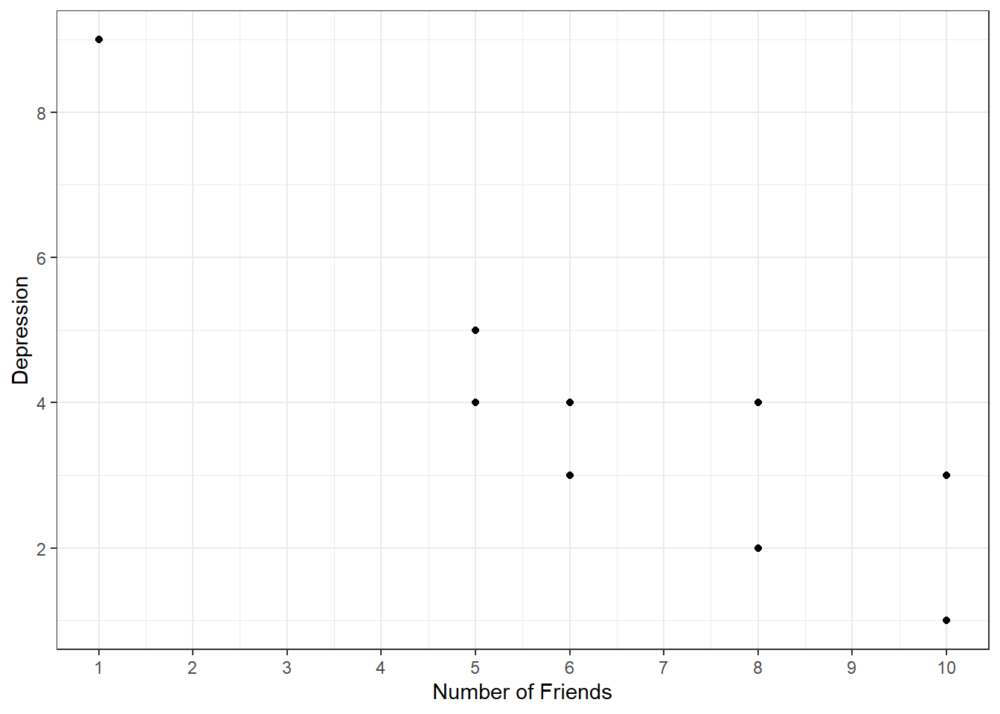
Using linear regression, we can construct a model that fits this data. This is a time-consuming process so it’d standard practice to use software to perform this task for us. However, I have also provided the mathematical formulas below so that you are familiar with the steps as well.
NoteSimple linear regression

From the model above:
- The slope \(b_1 = -0.71\):
For each additional friend, depression score decreases on average by 0.71 points.
- The negative slope implies an inverse relationship: more friends → lower depression.
However, even with a clear model, we must remember:
This is still correlational data, not causal evidence.
7.4 Extending to Multiple Regression
Simple regression uses one predictor. But most real-world outcomes are influenced by many variables.
Multiple regression extends the simple model by including more predictors: :contentReferenceoaicite:7
\[ \hat{Y} = b_0 + b_1 X_1 + b_2 X_2 + \cdots + b_k X_k \]
This allows us to:
- control for additional variables,
- isolate the effect of each predictor,
- improve prediction accuracy,
- and reduce the risk of misleading correlations caused by omitted variables.
7.4.1 Example: Predicting income
Suppose we have some data on worker’s: (1) years of education and (2) age, and we want to build a regression model for income:
\[ \hat{\text{Income}} = b_0 + b_1 \text{Education} + b_2 \text{Age} \]
And suppose we have used software to determine our \(b\) coefficients as:
\[ \hat{\text{Income}} = -117{,}110 + 4540(\text{Education}) + 3368(\text{Age}) \]
In the model above, the \(b\) coefficient for education is
\[b_1=4540\]
This means that for each additional year in education, income increases by $4540, when we hold all other variables constant.
This is like saying, if you take two people of the same age (i.e. holding age constant), but have one unit of difference in education, then the predicted difference in income would:
The difference in the predictions for the two people ($76,21 - $72,081 = $4,450) is equal to the b coefficient for education:

The difference in the predictions for the two people ($81,161 - $72,081 = $9,080) is equal to the 2 x b coefficient for education:

7.5 Interpreting p-values and confidence intervals
The estimated regression coefficients describe the relationships observed in the sample. However, these relationships may partly reflect random sampling variation. Regression output therefore also includes p-values and confidence intervals, which help us assess how much evidence the data provide for relationships in the wider population.
Suppose Excel’s Data Analysis ToolPak produced the following coefficient table for our income model:
| Coefficients | Standard Error | t Stat | P-value | Lower 95% | Upper 95% | |
|---|---|---|---|---|---|---|
| Intercept | -117,110 | 18,750 | -6.25 | <0.001 | -154,324 | -79,896 |
| Education | 4,540 | 760 | 5.97 | <0.001 | 3,032 | 6,048 |
| Age | 3,368 | 920 | 3.66 | <0.001 | 1,542 | 5,194 |
The coefficient provides the estimated change in income associated with a one-unit increase in a predictor, while holding the other predictors constant. The remaining columns tell us how uncertain that estimate is.
7.5.1 Interpreting the p-values
For each predictor, the regression output tests whether its population coefficient is equal to zero.
For education, the hypotheses are:
\[ H_0:\beta_{\text{Education}}=0 \]
\[ H_1:\beta_{\text{Education}}\neq0 \]
The null hypothesis states that, after controlling for age, there is no linear relationship between education and income in the population.
The alternative hypothesis states that education is related to income after controlling for age.
Similarly, for age, the hypotheses are:
\[ H_0:\beta_{\text{Age}}=0 \]
\[ H_1:\beta_{\text{Age}}\neq0 \]
The p-value measures how unusual the estimated coefficient would be if the corresponding population coefficient were zero. We commonly compare the p-value with a significance level of:
\[ \alpha=0.05 \]
The decision can then be made as follows:
- If the p-value is less than \(0.05\), we reject the null hypothesis and conclude that there is evidence of a relationship.
- If the p-value is greater than \(0.05\), we do not reject the null hypothesis. The data do not provide sufficient evidence of a relationship.
For education, the p-value is less than \(0.001\). We therefore reject the null hypothesis and conclude that there is strong evidence of a relationship between education and income after controlling for age.
For age, the p-value is also less than \(0.001\). We therefore reject the null hypothesis and conclude that there is strong evidence of a relationship between age and income after controlling for education.
Important
A p-value does not tell us the size or practical importance of a relationship. It also does not represent the probability that the null hypothesis is true. The size and direction of the relationship should be interpreted using the coefficient and its confidence interval.
7.5.2 Interpreting the confidence intervals
A confidence interval provides a range of plausible values for the corresponding population coefficient. The regression output gives the lower and upper limits of a 95% confidence interval.
For education, the estimated coefficient and confidence interval are:
\[ b_1=4540 \]
\[ 95\%\text{ CI }[3032,\ 6048] \]
Holding age constant, each additional year of education is associated with an estimated $4,540 increase in annual income.
The 95% confidence interval indicates that the increase in annual income associated with an additional year of education could plausibly be between approximately $3,032 and $6,048.
For age, the estimated coefficient and confidence interval are:
\[ b_2=3368 \]
\[ 95\%\text{ CI }[1542,\ 5194] \]
Holding education constant, each additional year of age is associated with an estimated $3,368 increase in annual income.
The 95% confidence interval indicates that the increase in annual income associated with an additional year of age could plausibly be between approximately $1,542 and $5,194.
The width of a confidence interval also tells us about the precision of an estimate:
- A narrow confidence interval indicates a more precise estimate.
- A wide confidence interval indicates greater uncertainty about the size of the relationship.
7.5.3 Connecting confidence intervals and p-values
For a two-sided hypothesis test using a significance level of \(0.05\), the p-value and 95% confidence interval lead to the same conclusion:
- If the confidence interval does not include zero, the coefficient is statistically significant at the 5% level.
- If the confidence interval includes zero, the coefficient is not statistically significant at the 5% level.
The confidence interval for education is:
\[ [3032,\ 6048] \]
The confidence interval does not contain zero. This agrees with the p-value of less than \(0.001\) and provides evidence that education is related to income after controlling for age.
The confidence interval for age is:
\[ [1542,\ 5194] \]
This interval also does not contain zero. This agrees with the p-value of less than \(0.001\) and provides evidence that age is related to income after controlling for education.
7.5.4 Interpreting the intercept
The intercept is the predicted value of the outcome when all predictors equal zero. In this model, the intercept is:
\[ b_0=-117{,}110 \]
This represents the predicted income of someone who is zero years old and has completed zero years of education.
Although the intercept is statistically significant, it does not have a useful real-world interpretation because a worker aged zero is outside the meaningful range of the data. This illustrates why statistical significance does not necessarily imply practical meaning.
7.5.5 Reporting the results
A concise interpretation of the regression results might be:
Holding age constant, each additional year of education was associated with an estimated $4,540 increase in annual income, 95% CI [$3,032, $6,048], \(p<.001\). Holding education constant, each additional year of age was associated with an estimated $3,368 increase in annual income, 95% CI [$1,542, $5,194], \(p<.001\).
These results describe associations, not necessarily causal effects. Unless the data come from a suitable experimental design, or other assumptions supporting causal inference can be justified, we cannot conclude that increasing a person’s education or age will directly cause their income to increase.
7.6 Goodness of fit
So far, we have focused on interpreting individual regression coefficients and using p-values to assess whether a relationship is statistically significant. However, a statistically significant relationship does not automatically mean that a model is useful or informative.* A model can detect a real association while still doing a poor job of explaining the outcome overall. This leads to an important next question:
how well does our regression model actually fit the data?
Measures of goodness of fit help us quantify how closely the model’s predictions align with the observed values, allowing us to assess how much of the variation in the outcome is explained by the model and to compare different regression models in a meaningful way.
7.6.1 \(R^2\) as a measure of model fit
One of the most commonly reported measures of goodness of fit in regression is \(R^2\), known as the coefficient of determination. While regression coefficients tell us about the direction and size of relationships between variables, \(R^2\) focuses on the model as a whole. Conceptually, \(R^2\) answers the following question:
How much of the variation in the outcome variable is explained by the regression model?
To understand this, recall that real-world data vary. Individuals differ in their outcomes for many reasons, not all of which are captured by the predictors in a model. A regression model attempts to explain some of this variability using the predictors we include. The remaining variation reflects factors not in the model, randomness, or measurement error.
The value of \(R^2\) lies between 0 and 1:
- An \(R^2\) close to 0 indicates that the model explains very little of the variation in the outcome.
- An \(R^2\) close to 1 indicates that the model explains a large proportion of the variation.
For example, an \(R^2=0.65\) means that 65% of the variability in the outcome variable can be explained by the predictors in the regression model, while the remaining 35% is unexplained.
7.6.2 Interpreting \(R^2\) in context
It is important to interpret \(R^2\) in context, rather than treating it as a universal benchmark of model quality.
In fields such as physics or engineering, very high \(R^2\) values are common because systems are tightly controlled. In contrast, in social, behavioural, and economic data — — human behaviour is influenced by many unobserved factors. As a result, moderate \(R^2\) values can still represent meaningful and useful models.
A low \(R^2\) does not necessarily imply that a model is “wrong.” It may simply reflect the complexity of the phenomenon being studied. Likewise, a high \(R^2\) does not guarantee that a model is appropriate or that the relationship is causal.
7.6.3 \(R^2\) and statistical significance
A common misconception is that a high \(R^2\) is required for regression coefficients to be statistically significant. In reality, these concepts address different questions:
- Statistical significance (via p-values) assesses whether a relationship is likely to exist in the population.
- \(R^2\) assesses how much of the outcome’s variability the model explains.
It is entirely possible to have:
- a statistically significant coefficient with a low \(R^2\), or
- a high \(R^2\) with some non-significant predictors.
This distinction reinforces why both coefficient-level inference and model-level fit should be considered together when interpreting regression results.
7.6.4 Computing \(R^2\)
Back in Chapter 2 we learnt the formula for the variance as:
\[ \frac{1}{n-1}\sum_{i=1}^{n} (X_i - \bar{X})^2 \] This formula (more importantly: the sum of squares) will help us to determine \(R^2\). Let’s use a small sample to explore this. Consider the time spent on the phone in one week (mins) by 6 random university students. In the table below, we compute the squared errors for each student:
Student | Time |
|---|---|
1 | 308 |
2 | 300 |
3 | 306 |
4 | 304 |
5 | 308 |
6 | 310 |
We’ll begin by visualising this data on a scatterplot (and we can see that overall, there is variability bewteen the data points). If we plot the mean (\(306\)), we can see how far away each point is from this line (referred to as a deviation, or error):
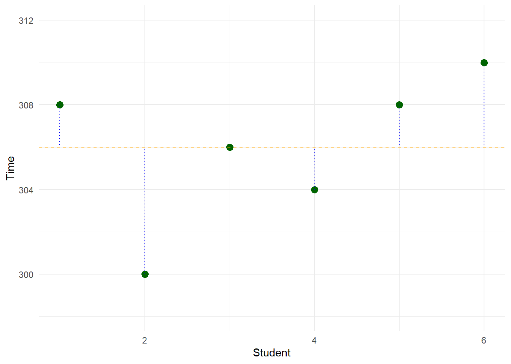
When we add up the squared errors, we get the sum of squares. Now at this point, we are only looking at the outcome variable (i.e. we haven’t included any predictors yet), so we can refer to this as the sum of squares total (\(SS_T\)):
\[ \begin{aligned} SS_T &= \sum_{i=1}^{n} (X_i - \bar{X})^2 \\ &= (308-306)^2+(300-306)^2+(306-306)^2+(304-306)^2+(308-306)^2+(310-306)^2 \\ &= 4+36+0+4+4+16 \\ &= 64 \end{aligned} \]
Note there are three sources of \(SS\) that we need to be aware of:
- \(SS_T\) (Sum of Squares Total)
- \(SS_E\) (Sum of Squares Error)
- \(SS_R\) (Sum of Squares Regression)
In this example, we have computed \(SS_T=64\). In other words:
The total variability in “Time” is 64 units
Now suppose we build a regression model to predict Time based on number of social media friends (let’s call this variable Social). Suppose the data looks something like this:
Student | Time | Social |
|---|---|---|
1 | 308 | 110 |
2 | 300 | 115 |
3 | 306 | 120 |
4 | 304 | 125 |
5 | 308 | 130 |
6 | 310 | 135 |
And let’s suppose we used software to obtain the regression coefficients for this model to be:
\[Time=283.6+0.18(Social)\]
Using this regression equation, we can see what the model would have predicted Time to be for each student. And we can determine the \(SS\) using a similar approach to \(SS_T\). However, we refer to this as \(SS_E\) (Sum of Squares Error):
Student | Time | Social | Model | Error | Error2 |
|---|---|---|---|---|---|
1 | 308 | 110 | 283.6 + (0.18 x 110) = 303.4 | 4.6 | 18.5 |
2 | 300 | 115 | 283.6 + (0.18 x 115) = 304.3 | -4.3 | 21.2 |
3 | 306 | 120 | 283.6 + (0.18 x 120) = 305.2 | 0.8 | 0.3 |
4 | 304 | 125 | 283.6 + (0.18 x 125) = 306.1 | -2.1 | 6.3 |
5 | 308 | 130 | 283.6 + (0.18 x 130) = 307.0 | 1.0 | 0.4 |
6 | 310 | 135 | 283.6 + (0.18 x 135) = 307.9 | 2.1 | 0.9 |
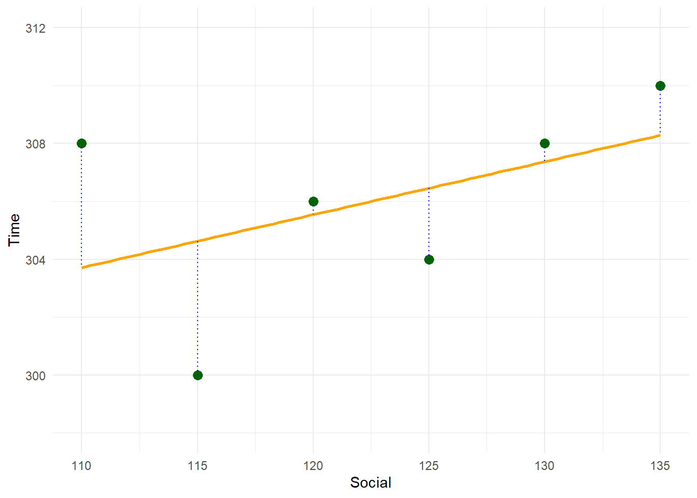
\[ \begin{aligned} SS_E &= \sum_{i=1}^{n} (X_i - \bar{X})^2 \\ &= (308-303.4)^2+(300-304.3)^2+(306-305.2)^2+(304-306.1)^2+(308-307.0)^2+(310-307.9)^2 \\ &= 18.5+21.2+0.3+6.3+0.4+2.9 \\ &= 49.4 \end{aligned} \] With these two sources of error (\(SS_T\) and \(SS_E\)), we can determined \(SS_R\). This is because
\[SS_T=SS_E+SS_R\]
Therefore:
\[SS_R=SS_T-SS_E\]
And because we have calculated \(SS_T\) and \(SS_E\) to be 64 and 49.4, respectively, we can solve \(SS_R\) to be:
\[SS_R=64-49.4=14.6\]
More importantly, if we take the ratio of \(SS_R\) and \(SS_T\), we can express how much of the variance in our outcome is explained by the regression model, rather than left unexplained by random variation. This is called the coefficient of determination, or \(R^2\).
\[ \begin{aligned} R^2 &= \frac{SS_R}{SS_T} \\ &= \frac{14.6}{64} \\ &= 0.229 \end{aligned} \]
In this example, we can interpret this as:
22.9% of the variation in time on the phone can be explained by this model.
Note: \(R^2\) is more suitable when we are dealing with simple linear regression. For multiple linear regression, we should use \(\text{Adjusted } R^2\). This is because \(R^2\) will always increase (or stay the same) when additional predictors are added to a model, even if those predictors contribute little or no meaningful explanatory power, whereas adjusted \(R^2\) penalises unnecessary model complexity and provides a fairer measure of model fit.
We will learn how to compute \(\text{Adjusted } R^2\) in the Excel section of this chapter.
7.7 Regression with a binary predictor
Up to this point, all of our regression examples have used numeric predictors. In these settings, interpretation is relatively straightforward: a regression coefficient represents the expected change in the outcome associated with a one-unit increase in the predictor, holding all other variables constant.
However, many important variables in real data are categorical rather than numeric. Examples include treatment group, employment status, or whether a customer is new or returning. Regression can still be used in these situations, but the interpretation of the coefficients changes.
We begin with the simplest categorical case: a binary predictor, which takes only two possible values. Suppose we are interested in understanding job satisfaction among employees. For each employee, we record:
- Job satisfaction (measured on a numeric scale)
- Income (numeric)
- Years at company, coded as a binary variable:
- 0 = less than 4 years
- 1 = 4 years or more
\[\text{Job Satisfaction} =\beta_0+\beta_1\text{Income}+\beta_2 \text{Years}\]
Suppose we ran a regression model on some data and determined the coefficients to be:
\[\text{Job Satisfaction} =7.2953+0.001(\text{Income})+ 3.4714 (\text{Years})\]
Let’s interpret what the coefficient for Years (here = 3.4717) actually means by comparing two people with different codes for this variable, but keeping everything else constant:
- Person A
- Income: \(75,000\)
- Years: “Less than 4” (0)
- Person B
- Income: \(75,000\)
- Years: “More than 4” (1)
If we substitute these values into the model for each person, we can determine their predicted job satisfaction scores:
\[\text{Job Satisfaction}_A =7.2953+0.001(\text{Income})+ 3.4714 (\text{0})=14.7953\] \[\text{Job Satisfaction}_B =7.2953+0.001(\text{Income})+ 3.4714 (\text{1})=18.2667\]
The difference between the two predictions (18.2667 – 14.7953) is equal to the coefficient for years (3.4714). Therefore, we can interpret this coefficient as:
Job satisfaction is 3.4714 points higher, on average, for employees who have been at the company for more than 4 years, compared to those who have been at the company less than 4 years, when income is controlled for.
Now, what if we had used different codes? E.g. what if we switched the 0s and 1s the other way?
- Years at company, coded as a binary variable:
- 1 = less than 4 years
- 0 = 4 years or more
In this case, the coefficients for the other terms might change, but the coefficient for Years will remain the same. The only difference is that the direction (i.e. positive or negative) will switch. For example, running a regression analysis on the same data, but switching the codes for Years would yield us the following:
\[\text{Job Satisfaction} =10.7668+0.001(\text{Income})- 3.4714 (\text{Years})\]
If we take the same two people from before, but now with the codes reversed:
- Person A
- Income: \(75,000\)
- Years: “Less than 4” (1)
- Person B
- Income: \(75,000\)
- Years: “More than 4” (0)
And substitute these values into the model for each person with the new model:
\[\text{Job Satisfaction}_A =10.7668+0.001(\text{Income})- 3.4714 (\text{1})=14.7953\]
\[\text{Job Satisfaction}_B =10.7668+0.001(\text{Income})- 3.4714 (\text{0})=18.2667\]
Notice here that the predictions work out to be exactly the same as above. And that the difference between the two predictions (18.2667 – 14.7953) is equal to the coefficient for years (3.4714).
7.8 Regression with a categorical predictor ((k > 2) levels)
The binary predictor case works neatly because there are only two groups. But in many real-world problems, categorical variables have more than two categories. Common examples include job position, education level, or type of contract. Regression can still be used in these situations — but we need to be more careful about how the variable is represented in the model.
Suppose we extend our job satisfaction example by including job position as a predictor, with three possible levels:
- Clerical
- Labourer
- Manager
Our goal is to understand how job satisfaction differs across these roles, while still controlling for income.
7.8.1 Choosing a reference level
A categorical variable with three levels does not correspond to a single numeric coefficient. Instead, regression works by comparing groups to a reference level (also called the baseline).
We must choose one category to act as this reference group. Suppose we choose:
Clerical as the reference level.
All other categories will be interpreted relative to clerical employees.
7.8.2 Dummy coding (indicator variables)
To include job position in the regression model, we create dummy variables (also called indicator variables). With three categories, we need two dummy variables:
Labourer- 1 = Labourer
- 0 = otherwise
- 1 = Labourer
Manager- 1 = Manager
- 0 = otherwise
- 1 = Manager
Clerical employees are implicitly represented when both dummy variables are equal to 0.
The regression model can be written as:
\[ \text{Job Satisfaction} = \beta_0 + \beta_1 \text{Income} + \beta_2 \text{Labourer} + \beta_3 \text{Manager} \]
7.8.3 Interpreting the coefficients
Under this coding:
- \((\beta_1)\) represents the predicted job satisfaction for every unit increase in income, holding position constant.
- \((\beta_2)\) represents the expected difference in job satisfaction between labourers and clerical employees, holding income constant.
- \((\beta_3)\) represents the expected difference in job satisfaction between managers and clerical employees, holding income constant.
Once we include a categorical predictor, the coefficients should be interpreted as group differences relative to the reference category, rather than as “per-unit increases”.
As an example, suppose we used software to fit the model, and we determined the coefficients to be:
\[ \text{Job Satisfaction} = 6.20 + 0.002\,(\text{Income}) - 1.50\,(\text{Labourer}) + 2.80\,(\text{Manager}) \] When can interpret each term in this equation as:
- Income \((\beta_1 = 0.002)\)
For every $1 increase in income, predicted job satisfaction increases by 0.002 points, on average, holding job position constant. - Labourer \((\beta_2 = -1.50)\)
Labourers are predicted to have job satisfaction scores that are 1.50 points lower than clerical employees, on average, holding income constant. - Manager \((\beta_3 = 2.80)\)
Managers are predicted to have job satisfaction scores that are 2.80 points higher than clerical employees, on average, holding income constant.
7.8.4 Why we cannot include all three positions as predictors
A natural question at this point is:
Why don’t we just include three dummy variables — one for clerical, one for labourer, and one for manager?
For example:
\[ \text{Job Satisfaction} = \beta_0 + \beta_1 \text{Income} + \beta_2 \text{Labourer} + \beta_3 \text{Manager} + \beta_3 \text{Clerical} \]
If we attempted this, we would run into a problem known as perfect multicollinearity. This occurs because, for every observation:
\[ \text{Clerical} + \text{Labourer} + \text{Manager} = 1. \]
This creates redundancy in the predictors, meaning the regression model cannot estimate all coefficients uniquely.
NoteMore advanced: why the model becomes rank deficient (matrix view)
The maths for this is beyond the scopes of this unit, but for those interested, consider that linear regression can be written in matrix form as:
\[ \mathbf{y} = \mathbf{X}\boldsymbol{\beta} + \boldsymbol{\varepsilon}. \]
If we include an intercept, income, and three dummy variables (clerical, labourer, manager), then for three example employees (A), (B), and (C), the design matrix would look like:
\[ \mathbf{X} = \begin{bmatrix} 1 & \text{Income}_A & 1 & 0 & 0 \\ 1 & \text{Income}_B & 0 & 1 & 0 \\ 1 & \text{Income}_C & 0 & 0 & 1 \end{bmatrix}. \]
For every row, exactly one of the three dummy variables equals 1 and the other two equal 0. Therefore:
\[ \text{Clerical} + \text{Labourer} + \text{Manager} = 1 = \text{Intercept}. \]
This means:
\[ \text{Column 3} + \text{Column 4} + \text{Column 5} = \text{Column 1}. \]
In other words, one column of the design matrix is an exact linear combination of the others. The matrix () is therefore rank deficient (it does not have full rank).
Ordinary least squares (OLS) estimation relies on:
\[ \hat{\boldsymbol{\beta}} = (\mathbf{X}^\top \mathbf{X})^{-1} \mathbf{X}^\top \mathbf{y}. \]
When \(\mathbf{X}\) is rank deficient, the matrix \(\mathbf{X}^\top \mathbf{X}\) is singular (non-invertible), so OLS regression cannot compute unique coefficient estimates.
In practice, statistical software will typically return an error or warning such as:
- “Coefficients are not uniquely determined”
- “Model matrix is rank deficient”
In Excel, the model will still run, but one of the rows will have an error:

7.8.5 The fix: use (k - 1) dummy variables
To avoid this issue, we must always include only (k - 1) dummy variables for a categorical predictor with (k) levels, treating the remaining category as the reference level.
With three job positions, we include two dummy variables (e.g. labourer and manager), and clerical becomes the baseline group.
7.8.6 Does the reference level matter?
The choice of reference level affects how we interpret the coefficients, but it does not change the fitted values or predictions produced by the model. Changing the reference category simply changes which comparisons appear explicitly in the regression output.
7.9 Regression with time-series
Up to this point, our independent variables (IVs) have been either continuous (such as income or years at the company) or categorical (such as position coded with dummy variables).
However, when we work with time series data, the situation is quite different. Time carries a natural sequential order, and the relationships between observations often depend on their position in that sequence.
Unlike income or years of experience, which can vary independently across individuals, time introduces autocorrelation - today’s outcome is usually related to yesterday’s.
As an example, suppose I had some Google Trends data, where I wanted to see how popular was the search term AFL on Google. And, let’s suppose, I looked at this across a five year period. The table below shows the first and last five obervations in this data set.
Week | Time | afl |
|---|---|---|
2020-08-16 | 1 | 43 |
2020-08-23 | 2 | 52 |
2020-08-30 | 3 | 52 |
2020-09-06 | 4 | 57 |
2020-09-13 | 5 | 53 |
⋮ | ⋮ | ⋮ |
2025-07-20 | 258 | 47 |
2025-07-27 | 259 | 48 |
2025-08-03 | 260 | 53 |
2025-08-10 | 261 | 53 |
2025-08-17 | 262 | 42 |
If we were to plot the data it shows a very obvious seasonal pattern, where AFL interest is low in Q1 and Q4 of any given year (because it’s the off-season), and high during Q2 and Q3 (within season).
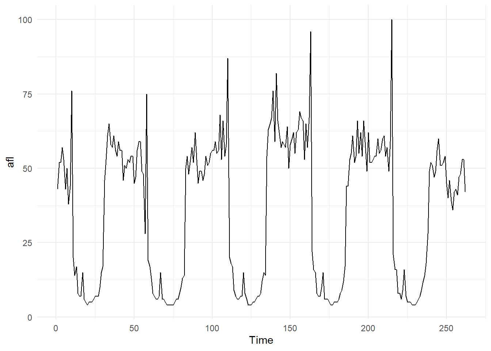
Now, suppose we modelled afl as a regression model (using Time as our predictor). Visually, this might look like:
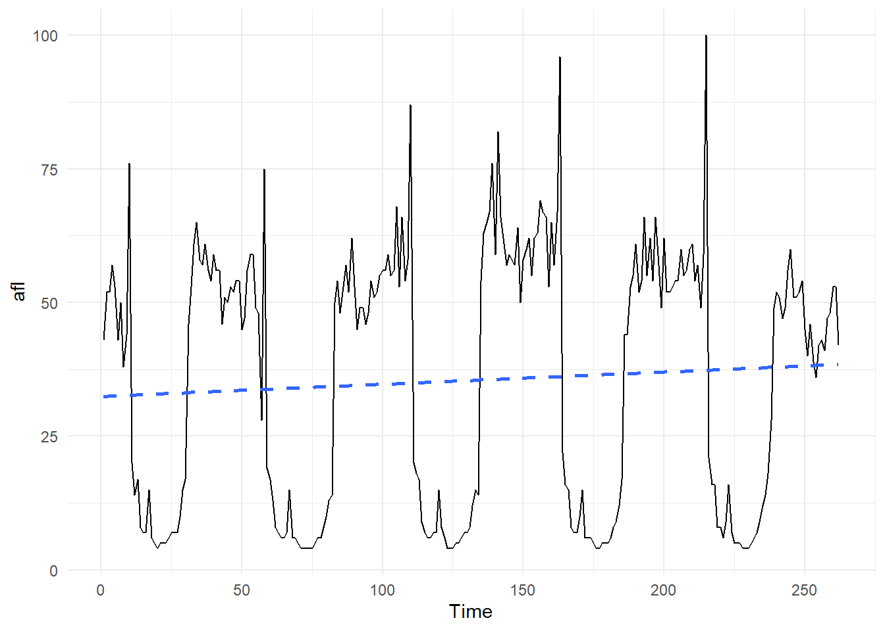
Notice here that this model, which is a straight line, is only picking up on the trend of the data. It does a very poor job of predicting actual afl interest for most of the data. As an example, suppose the fitted model was:
\[afl=32.45+0.023(Time)\]
And suppose we wanted to predict afl interest at time = 62 (which was 17/10/2021). The predicted value would be:
\[afl=32.45+0.023(62)=33.876\]
This is quite different to the actual value of 8:
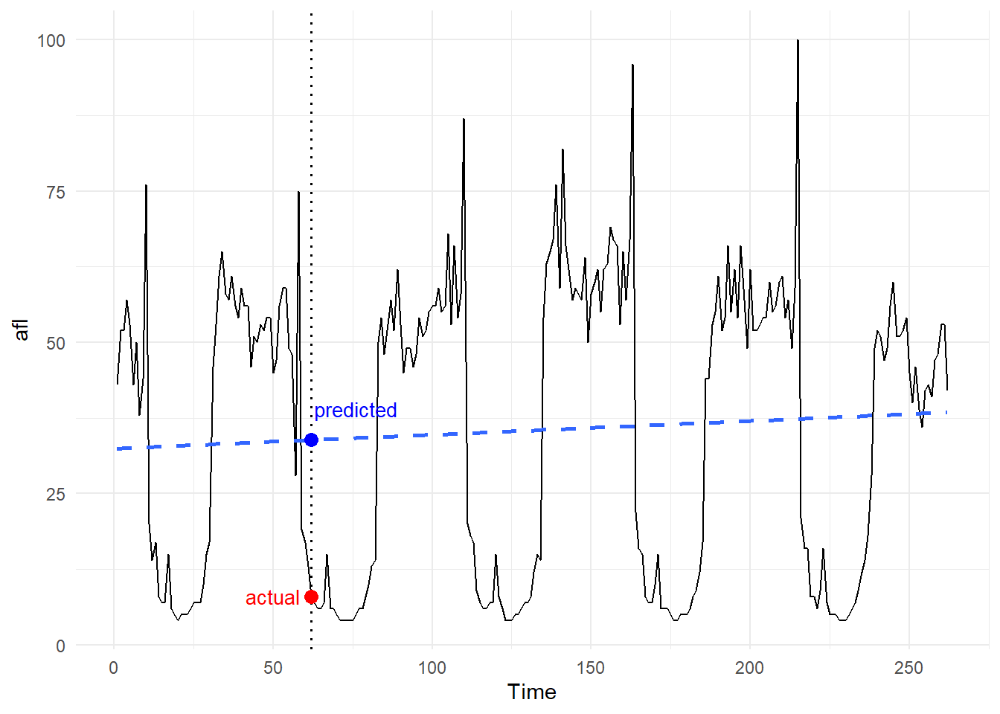
In future units, you will learn about time-series analysis, which is a more appropriate technique for handling this type of data. In this unit, ETC1000, you just need to be aware of this limitation when constructing your regression models.
As an example, consider the image below. Both panels use the exact same data (afl over time). The panel on the left is fitted with a linear regression model, and has made a linear forecast for the next 52 weeks. The panel on the right is a time series model, and it’s forecast is much more reflective on the actual data:
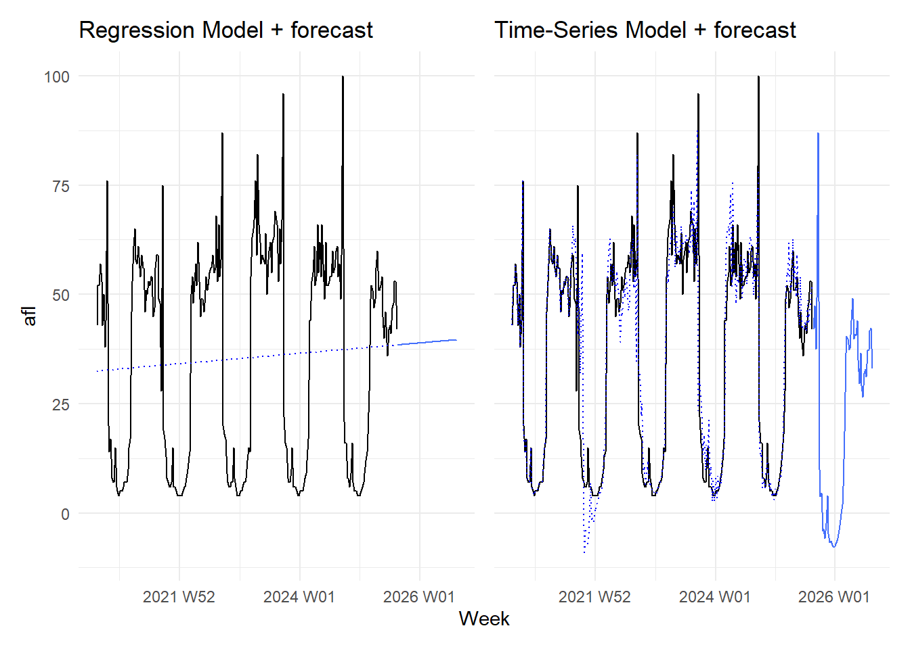
7.10 Interaction Effects
Thus far, our regression models have only considered additive effects, where each predictor is assumed to influence the outcome independently of the others. These are sometimes referred to as main effects. Under this assumption, the effect of a predictor — such as income, years at a company, or job position — is the same for all individuals, regardless of the values of other variables in the model.
In many real-world situations, however, this assumption is too simplistic. The relationship between a predictor and the outcome may depend on another variable. For example, an increase in income may have a different impact on job satisfaction for managers than it does for clerical staff, or the effect of time at a company may vary across roles. Interaction effects allow us to model these conditional relationships explicitly, extending regression beyond “average effects” and enabling more nuanced and realistic interpretations.
As an example, suppose a team of scientists recruited 40 high school students who enjoyed playing violent video games on a regular basis. They were asked to keep a record of how many hours of violent video games they played in one week. In addition, they had to complete a (pre-post) aggression questionnaire, where higher scores represented higher levels of aggression.
In this example, the researchers are investigating if time spent playing violent video games is associated with aggression. Graphically, this could be expressed as predictor \(\longrightarrow\) Outcome (a standard one-one relationship):
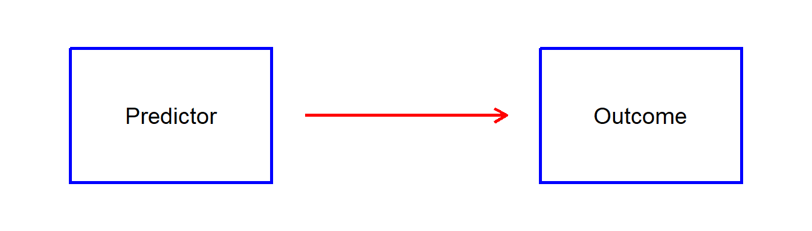
Interactions occur when we believe a third variable (usually called a moderator) can influence that one-to-one relationship:
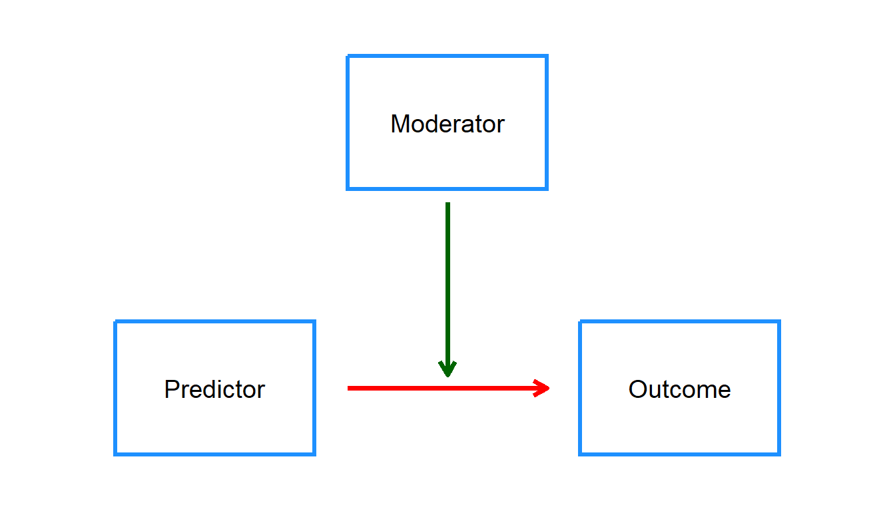
In our current example, the main effect is:
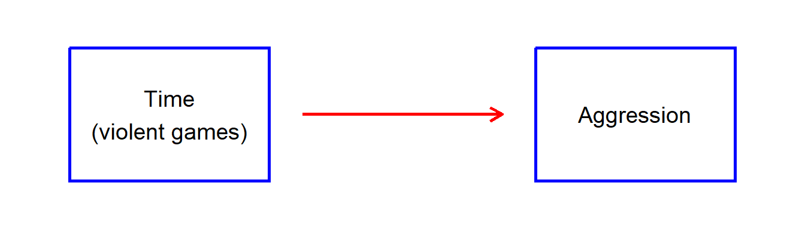
In our current dataset, if we consider just the relationship between Time and Aggression, we can observe a positive linear trend line (i.e. the more time one plays violent video games \(\longrightarrow\) the higher the aggression score), see the left panel below. However, suppose there was a third variable, History of Family Violence (yes / no). And we fitted separate models for each group. We can see that depending on whether or not the participant had a history of family violence, then the slope of the relationship is quite different (see the right panel).
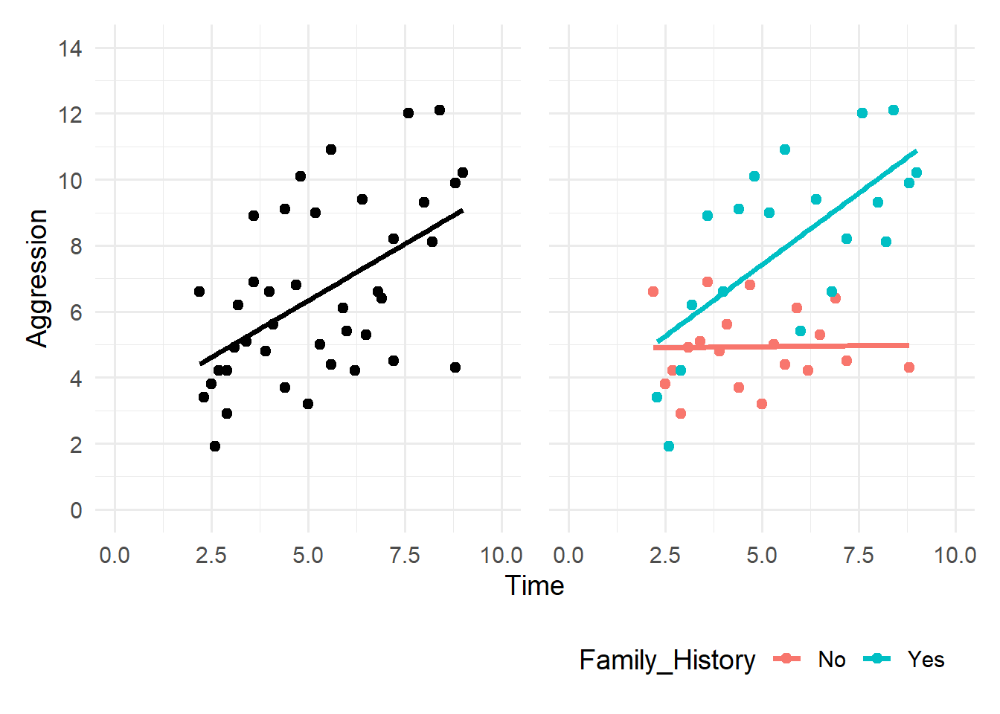
If we look at the relationship between Time and Aggression for those with a family history of violence,then it appears that there is a strong positive relationship between Time and Aggression. However, if we only look at the children from the No history of violence group, then we can see that there is a very weak relationship between Time and Aggression. Given these differences, using the original scatter plot (left-panel) would not paint a clear picture of what is really happening. Depending on the child’s group (Yes / No), the relationship between Time and Aggression is quite different!
Therefore, we would say that Family History is moderating the relationship between Time and Aggression
Mathematically, moderation (or interaction) is represented by including a product term in the regression model, formed by multiplying the two variables together (for example, Variable 1 × Variable 2). This interaction term allows the slope of one predictor to vary across levels of the other.
Suppose the first five rows of our data looked like the table below, where
Group(0 = No family history; 1 = Yes family history)
Group | Time | Aggression |
|---|---|---|
0 | 5.42 | 2.78 |
1 | 4.04 | 6.42 |
0 | 4.78 | 6.87 |
0 | 7.20 | 5.09 |
1 | 4.30 | 6.58 |
The interaction term is computed by multiplying Group and Time together. In this example:
Group | Time | Group.Time | Aggression |
|---|---|---|---|
0 | 5.42 | 0 x 5.42 = 0 | 2.78 |
1 | 4.04 | 1 x 4.04 = 4.04 | 6.42 |
0 | 4.78 | 0 x 4.78 = 0 | 6.87 |
0 | 7.20 | 0 x 7.2 = 0 | 5.09 |
1 | 4.30 | 1 x 4.3 = 4.3 | 6.58 |
We would then fit this as a term (effect) in our regression model. Suppose the coefficients table, for the full 40 children provided the following results:
. | Coefficients | SE | t.Stat | P.value |
|---|---|---|---|---|
Intercept | 3.854 | 0.902 | 4.274 | 0.0001 |
Group | -1.814 | 1.184 | -1.523 | 0.1311 |
Time | 0.239 | 0.173 | 1.384 | 0.1718 |
Group*Time | 0.663 | 0.219 | 3.023 | 0.0038 |
Using this table, we can determine the model to be:
\[ Aggression=3.85-1.81(Group)+0.24(Time)+0.66(Group\times Time) \]
And because we know how Group is coded (0 = No; 1 = Yes), we can construct seperate models for each group:
\[ \begin{aligned} Aggression_{Group:0} &= 3.85 -1.81(0)+0.24(Time)+0.66(0 \times Time) \\ &= 3.85+0.24(Time) \\ \end{aligned} \]
\[ \begin{aligned} Aggression_{Group:1} &= 3.85 -1.81(1)+0.24(Time)+0.66(1 \times Time) \\ &= 2.04+0.90(Time) \\ \end{aligned} \]
Notice here that the slope for Group 0 (No history of family violence) is relatively small (\(\beta=0.24\)), indicating little increase in Aggression as Time increases. By comparison, the slope for Group 1 (Yes history of family violence) is much larger (\(\beta=0.90\)), indicating a much larger increase in Aggression as Time increases. This is consistent with what we saw in our scatterplots earlier:
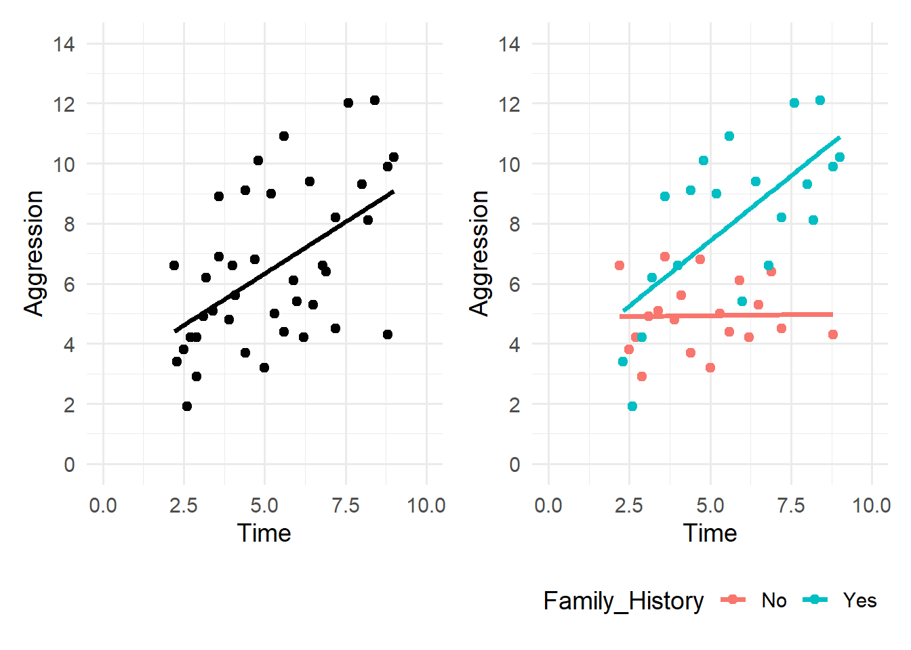
Finally, let’s look at the p-values for this scenario.
. | Coefficients | SE | t.Stat | P.value |
|---|---|---|---|---|
Intercept | 3.854 | 0.902 | 4.274 | 0.0001 |
Group | -1.814 | 1.184 | -1.523 | 0.1311 |
Time | 0.239 | 0.173 | 1.384 | 0.1718 |
Group*Time | 0.663 | 0.219 | 3.023 | 0.0038 |
The interaction term (Group × Time) is statistically significant (p = .0038), providing strong evidence that the effect of Time on Aggression differs between the two groups. In contrast, the main effect of Time alone (p = 0.1718) is not statistically significant, highlighting that the relationship between Time and Aggression cannot be adequately described by a single common slope. Together, these results confirm that Group moderates the relationship between Time and Aggression, which is precisely what we observed visually in the scatterplots.
7.11 Workshop Exercises
We will continue using the same dataset as last time. You can re-download it here if you did not save the file from last time:
In this workshop, we focus on the following numerical variables:
profit(outcome)yearsoperating_costsmarketing_spendemployees
as well as the following categorical variables:
has_online_storerecieved_grantbrand_recognition
7.11.1 Task 1
7.11.1.1 Simple Linear Regression (numeric predictor)
Build 3 simple linear regression models using the Data Analysis Toolpak in Excel.
- Model 1: y = profit, x = years
- Model 2: y = profit, x = operating costs
- Model 3: y = profit, x = employees
7.11.1.2 Questions
- What is the estimated slope coefficient for each model?
- What is the p-value associated with the slope for each model?
- At the 5% significance level, are the models statistically significant?
7.11.2 Task 2
7.11.2.1 Simple Linear Regression (binary predictor)
- Create new columns that converts the
NoandYesto0and1forhas_online_storeand `received_grant``. - Create a new column that converts the
LowandHighto0and1forbrand_recognition. - Using the ToolPak, construct three simple linear regression models:
- Model 4: y = profit, x = has_online_store
- Model 5: y = profit, x = received_grant
- Model 6: y = profit, x = brand_recognition
7.11.2.2 Questions
Interpret the slope and associated p-value for each model (use alpha = 0.05).
7.11.3 Task 3
7.11.3.1 Simple Linear Regression (categorical predictor)
The variable industry_sector has 3 levels:
- Hospitality
- Retail
- Tech
Create 3 new columns that dummy codes industry_sector into
- Hospitality: 0 (No) and 1 (Yes)
- Retail: 0 (No) and 1 (Yes)
- Tech: 0 (No) and 1 (Yes)
Create a simple linear regression model (Model 7) to predict profit with Retail and Tech as the predictors.
7.11.3.2 Questions
Interpret the slope and associated p-value for each effect in this model (use alpha = 0.05).
7.11.4 Task 4
7.11.4.1 Multiple Regression
Create a multiple Regression model (Model 8) that predicts profit with the following as predictors:
yearsoperating_costbrand_recognition
7.11.4.2 Questions
- Interpret the slope and associated p-value for each effect in this model (use alpha = 0.05).
- Using this model, what is the predicted profit for a business that has been running for 5 years, spent $250,000 last year in operating costs (remember this is 250 because of the way the variable is quantified), and has High brand recognition?
7.11.5 Task 5
7.11.5.1 Multiple Regression with an Interaction Term
Create a new column to represent the interaction between
yearandbrand_recognition.- The interaction is the product of the two variables
- Make sure you are using the brand_recognition that is 0s and 1s
Fit a new model (Model 9) that predicts
profitwith the following as predictors:
yearsbrand_recognitionyears x brand_recognition
7.11.5.2 Questions
- What is the regression equation for this scenario?
- Using your regression equation, derive separate models for High and Low brand recognition
7.11.6 Task 6
7.11.6.1 Model Fit
Create a table that reports the R Squared and Adjusted R Squared for each of your models (Model 1 to Model 9).

7.11.6.2 Questions
- Which models would be use R Squared and which models would we use Adjusted R Squared?
- If we had to choose only 1 model, which model would that be, and why?